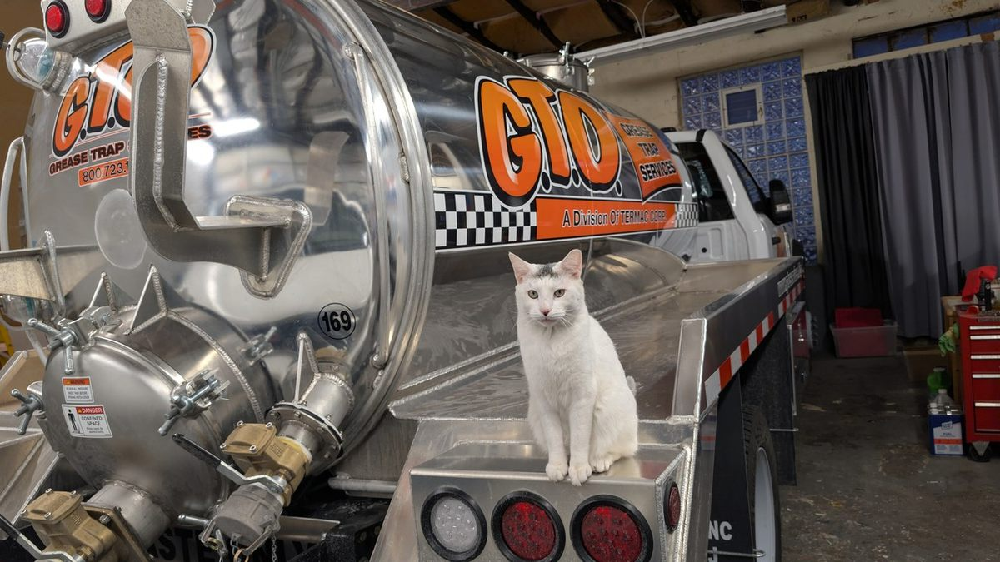
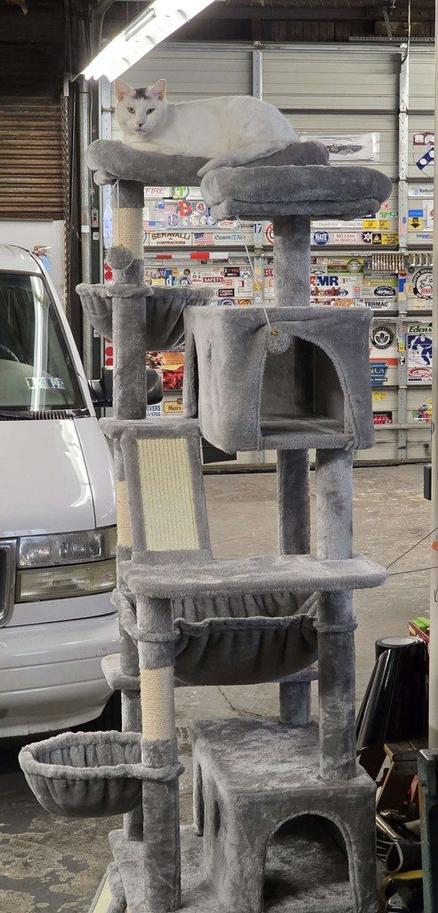
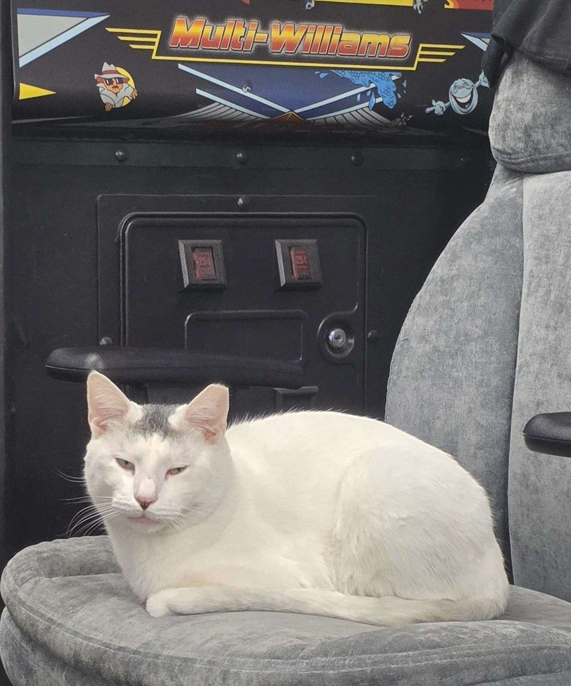
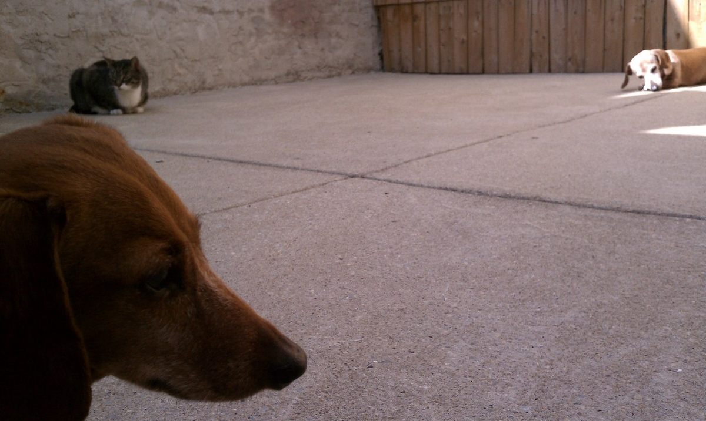

By Appointment Only, Email to:
den@baudersigns.com
Historical Archive
View the original Bauder Signs website
Search all portfolio images
Animal Graphics in Philadelphia by Bauder Signs and Bauder Graphics
Select a thumbnail below to update the large image. Use Previous and Next inside the viewer for more photos.




By Appointment Only
Email to:
den@baudersigns.com